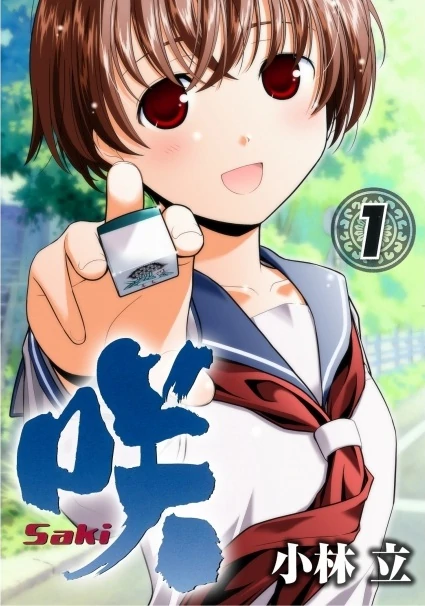
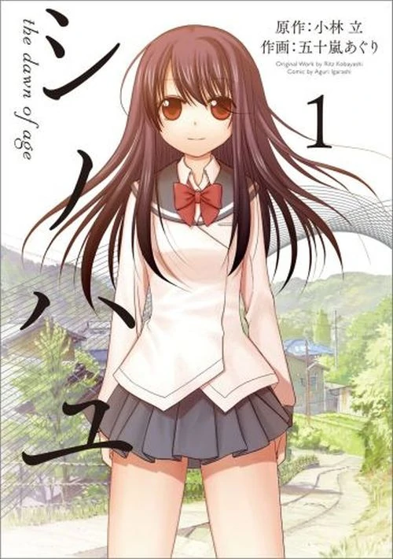
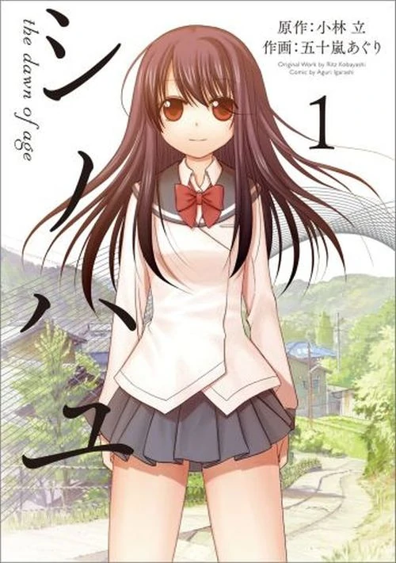

SAKI
Web dedicada a la serie de manga y anime, creada por Kobayashi Ritz
 Saki (咲-Saki-?) es un manga japonés escrito e ilustrado por Ritz Kobayashi. La historia trata sobre Saki Miyanaga, una estudiante que cursa el primer año de preparatoria quién
está envuelta en el mundo competitivo de mahjong gracias a otra estudiante llamada Nodoka Haramura.
El manga ha sido serializado por Young Gangan de Square Enix desde el 3 de febrero de 2006 y está licenciado al inglés por Yen Press. Una adaptación al anime, que consta de 25 episodios, fue producido por Gonzo y transmitido entre abril y septiembre de 2009 por TV Tokyo. Un manga spin-off, ilustrado por Aguri Igarashi, llamado "Saki Achiga-hen episode of Side-A" (咲 Saki 阿知賀編 episode of Side-A), fue serializado entre septiembre de 2011 y abril de 2013 por Monthly Shōnen Gangan, con una adaptación al anime por Studio Gokumi transmitido entre abril y julio de 2012, con cuatro episodios adicionales transmitidos entre diciembre de 2012 y mayo de 2013. Una tercera serie de anime, Saki: The Nationals (咲-Saki-全国編 Saki: Zenkoku-hen), también de Studio Gokumi, se emitió entre enero y abril de 2014. Una serie derivada de Saki, Side story of -Saki-: Shinohayu the Dawn of Age, fue seriaizada en Big Gangan a partir de septiembre de 2013.
En junio de 2011, un spin-off escrito por Saya Kiyoshi llamado Saki Biyori, fue publicado en Young Gangan hasta marzo de 2018, con un total de 7 volúmenes; teniendo una adaptación al OVA el 25 de julio de 2015. Otro manga spin-off ilustrado por Meki Meki, Toki, comenzó la serialización en Big Gangan desde junio de 2016. Una serie de televisión de Live-Action fue transmitida entre diciembre de 2016 y enero de 2017, y una película fue lanzada en Japón en febrero de 2017
El manga ha sido serializado por Young Gangan de Square Enix desde el 3 de febrero de 2006 y está licenciado al inglés por Yen Press. Una adaptación al anime, que consta de 25 episodios, fue producido por Gonzo y transmitido entre abril y septiembre de 2009 por TV Tokyo. Un manga spin-off, ilustrado por Aguri Igarashi, llamado "Saki Achiga-hen episode of Side-A" (咲 Saki 阿知賀編 episode of Side-A), fue serializado entre septiembre de 2011 y abril de 2013 por Monthly Shōnen Gangan, con una adaptación al anime por Studio Gokumi transmitido entre abril y julio de 2012, con cuatro episodios adicionales transmitidos entre diciembre de 2012 y mayo de 2013. Una tercera serie de anime, Saki: The Nationals (咲-Saki-全国編 Saki: Zenkoku-hen), también de Studio Gokumi, se emitió entre enero y abril de 2014. Una serie derivada de Saki, Side story of -Saki-: Shinohayu the Dawn of Age, fue seriaizada en Big Gangan a partir de septiembre de 2013.
En junio de 2011, un spin-off escrito por Saya Kiyoshi llamado Saki Biyori, fue publicado en Young Gangan hasta marzo de 2018, con un total de 7 volúmenes; teniendo una adaptación al OVA el 25 de julio de 2015. Otro manga spin-off ilustrado por Meki Meki, Toki, comenzó la serialización en Big Gangan desde junio de 2016. Una serie de televisión de Live-Action fue transmitida entre diciembre de 2016 y enero de 2017, y una película fue lanzada en Japón en febrero de 2017